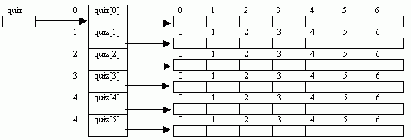
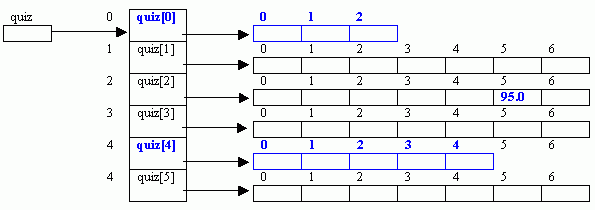
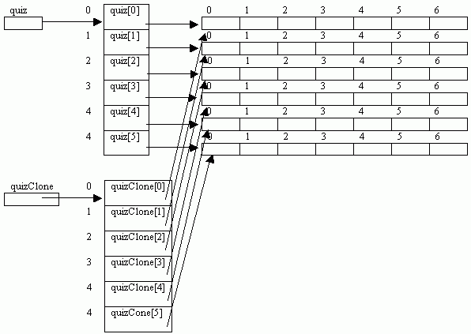
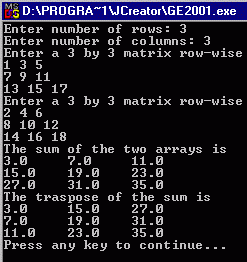
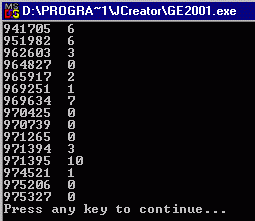

To
gain experience with:
Why 2D-arrays?
A
2D-array is used to store information that would otherwise require parallel
1D-arrays to store.
|
ID |
|
quiz1 |
quiz2 |
quiz3 |
quiz4 |
quiz5 |
quiz6 |
quiz7 |
|
900000 |
|
50.5 |
40.0 |
60.0 |
0.0 |
55.0 |
30.0 |
48.0 |
|
920000 |
|
70.0 |
60.0 |
75.0 |
90.0 |
66.5 |
75.0 |
80.0 |
|
930520 |
|
65.0 |
70.0 |
65.0 |
80.0 |
78.0 |
50.0 |
69.0 |
|
940000 |
|
80.0 |
90.0 |
95.0 |
85.0 |
100.0 |
88.0 |
92.0 |
|
953478 |
|
40.0 |
30.0 |
50.0 |
55.0 |
45.0 |
35.0 |
0.0 |
|
972893 |
|
60.0 |
50.0 |
39.0 |
70.0 |
55.9 |
70.0 |
59.0 |
What is a Java 2D-array?
A Java
2D-array is an array of arrays of possibly different sizes.
Declaring 2D-arrays:
A 2D-array in which each row has the same number of
elements is declared as:
type[
][ ] arrayName =
new
type[numberOfRows][numberOfColumns];
Example:
double[ ][ ]
quiz = new double[6][7];
The above declaration is equivalent to either of the
following:
|
double[][] quiz; quiz = new double[6][]; quiz[0] =
new double[7]; quiz[1] =
new double[7]; quiz[2] =
new double[7]; quiz[3] =
new double[7]; quiz[4] =
new double[7]; quiz[5] =
new double[7]; |
double[][]
quiz = new
double[6][]; for(int k = 0; k < quiz.length; k++) quiz[k] = new double[7]; |

Notes:
It
is obvious from the above declarations that each row of a 2-D array, quiz[i] is
an independent 1-D array. Thus, we
could use it wherever a 1-D array is expected.
For example, if there is a method average with the following header:
public static double
average(double[] a) {
. . .
}
Then
to get the average of the ith row, we could call it as:
double avg = average(quiz[i]);
Declaring rugged
2D-arrays:
Because each row in a 2-D array is an independent
1-D array, it follows that the rows of a 2-D array do not need to be all of the
same size. For example, if in the above
declaration, we change the declaration of rows 0 and 4 as follows,
quiz[0] = new double[3];
quiz[4] = new double[5];
Then we have the following rugged array.

Accessing individual elements:
Individual element of a 2-D array is accessed by
specify the index of row and column. For example
quiz[2][5] = 95.0;
Declaring, Creating and Initializing a 2D-array in
one step:
If we have the values, we could directly declare,
create and initialize a 2-D array in one step.
For example:
int[][] a = { {1, 0, 12, -1},
{7, -3, 2, 5 },
{-5, -2, 2, 9} };
Again, the rows do not have to be all of the same
size. For example:
int[][] a = { {1, 0, 12, -1},
{7, 5 },
{-5, -2, 2, 9} };
Example 1: The following reads a rugged array one row at a
time and then prints it.
import java.util.Scanner; import java.util.StringTokenizer; public class Rugged2DArray { public static void main(String[] args) { Scanner stdin = new Scanner(System.in); int[][] a = new int[3][]; a[0] = new int[5]; a[1] = new int[3]; a[2] = new int[4]; int row, column;for(row = 0; row < a.length; row++) { System.out.println("Enter "+a[row].length + " elements for row#" + (row + 1)); String inputLine = stdin.nextLine(); StringTokenizer tokenizer = new StringTokenizer(inputLine); for(column = 0; column < a[row].length; column++) a[row][column] = Integer.parseInt(tokenizer.nextToken());} System.out.println("\nThe array elements are:\n"); for(row = 0; row < a.length; row++) { for(column = 0; column < a[row].length; column++) System.out.print(a[row][column] + " "); System.out.println(); } System.out.println("\n\n"); }} |
Like 1-D
array, 2D-array can be passed as parameter to a method. Also, a method can return a 2-D array.
Example 2: The demonstrates array cloning.
import java.util.Scanner; import java.util.StringTokenizer; public class Matrix {static Scanner stdin = new Scanner(System.in); public static double[][] sum(double[][] a, double[][] b) { int row = a.length; int col = a[0].length; double[][] c = new double[row][col]; for (int i=0; i<row; i++) for (int j=0; j<col; j++) c[i][j] = a[i][j] + b[i][j]; return c; } public static double[][] createArray(int row, int col) { double[][] array = new double[row][col]; System.out.println("Enter a "+row+" by "+col+" matrix row-wise"); for (int i=0; i<row; i++) { String input = stdin.nextLine(); StringTokenizer st = new StringTokenizer(input); for (int j=0; j<col; j++) array[i][j] = Double.parseDouble(st.nextToken()); } return array; } public static void print(double[][] a) { int row = a.length; int col = a[0].length; for (int i=0; i<row; i++) { for (int j=0; j<col; j++) System.out.print(a[i][j]+ "\t"); System.out.println(); } } public static void main(String[] args) throws IOException { int row, column; System.out.print("Enter number of rows: "); row = Integer.parseInt(stdin.readLine()); System.out.print("Enter number of columns: "); column = Integer.parseInt(stdin.readLine()); double[][] a = createArray(row, column); double[][] b = createArray(row, column); double[][] c = sum(a,b); System.out.println("The sum of the two arrays is");print(c); }} |
Like 1-D
array, we can make a copy of an array using the clone method. For example, the
2D-array quiz can be clone using:
double[][] quizClone = (double[][]) quiz.clone;
However, the above statement only copies the references to the rows of quiz. The values of the actual elements are not copied. That is, any changes made to quiz will affect quizClone. This is called shallow cloning. The following figure shows the effect of shallow cloning:

To actually make a complete copy of quiz – called deep clonning, we need to also clone each row of
quiz and assigned to the corresponding row of quizClone. Using the staments of the form: quizClone[i] =
(double[]) quiz[i].clone();
Example 3: The following shows shallow
cloning.
public class ShallowCloning { public static void main(String args[]) { double[][] a = {{1, 2, 3}, {4, 5, 6}, {7, 8, 9}}; System.out.println("Printing array a"); Matrix.print(a); double[][] b = (double[][])a.clone(); System.out.println("Printing array b - clone of a"); Matrix.print(b); b[1][1] = 20; System.out.println("Printing array b after making chages to it"); Matrix.print(b); System.out.println("Printing array a after changing its clone"); Matrix.print(a); }} |
Example 4: The following shows deep
cloning:
public class DeepCloning { public static void main(String args[]) { double[][] a = {{1, 2, 3}, {4, 5, 6}, {7, 8, 9}}; System.out.println("Printing array a"); Matrix.print(a); double[][] b = (double[][])a.clone(); for (int i=0; i<b.length; i++) b[i] = (double[])a[i].clone(); System.out.println("Printing array b - clone of a"); Matrix.print(b); b[1][1] = 20; System.out.println("Printing array b after making chages to it"); Matrix.print(b); System.out.println("Printing array a after changing its clone"); Matrix.print(a); }} |
1.
Modify the Matrix class
of Example2 by adding a static method transpose, that returns the
transpose of a matrix it receives as parameter. Now call this method from the main method to get the transpose of
the array c (the sum of the two matrices) and then print it. Fig 1 below shows the sample run of the
modified program.
|
 |
 fig
2 |
|
fig
1 |
|
2. The file attend.txt contains attendance of 15
students in 20 lectures, with 1 representing present and 0 representing
absent. Write a program that reads the
data from the file into a 2-D integer array, absences, of size 15 by 21,
storing the ID numbers in the first column and the absences in the remaining 20
columns. Your program should count the
number of absences of each student and store the result in a 2-D integer array,
numberOfAbsences, of size 15 by 2, storing the ID in the first column
and the number of absences in the second.
Finally print the content of the array numberOfAbsences. Fig 2 above shows the sample run of the
program.
3. Modify assignment 2 above so that the program prints
only those students whose number of absences is more than 5. Your program must define and make use of the
following methods:
1.
public static int[][]
createArray(String fname, int rows, int
cols) : That receives name of the
file and the number of rows and columns as parameter, then opens the file and
uses it to create a 2-D array of int and returns it.
2.
public static int[][]
countAbsences(double[][] absences) :
to counts the absences of each student.
A square
matrix is said to be a magic square if it satisfies the following conditions:
The
elements are unique
adding
the elements in each row, each column and each of the two diagonals gives the
same result. For example the following is a magic square:
|
16 |
3 |
2 |
13 |
|
5 |
10 |
11 |
8 |
|
9 |
6 |
7 |
12 |
|
4 |
15 |
14 |
1 |
Write a
program that first reads the number size of a square matrix, then reads
elements of the matrix and prints one of the messages “IS A MAGIC SQUARE” or
“IS NOT A MAGIC SQUARE” accordingly.
Your
program must include at least the following methods:
static
int sumRow(int[][] a, int i) : That returns the sum of row i
static
int sumColumn(int[][] a, int i): That
returns the sum of columns i
static
int sumDiagonal(int[][] a, boolean mainDiag) : That returns the sum of the main diagonal if mainDiag is true or the
sum of the minor diagonal if mainDiag is false.
static
boolaean isUnique(int[][] a) : That
returns true if all the elments are unique
static
boolean isMagic(int[][] a): That
returns true if the square is magic and false otherwise.